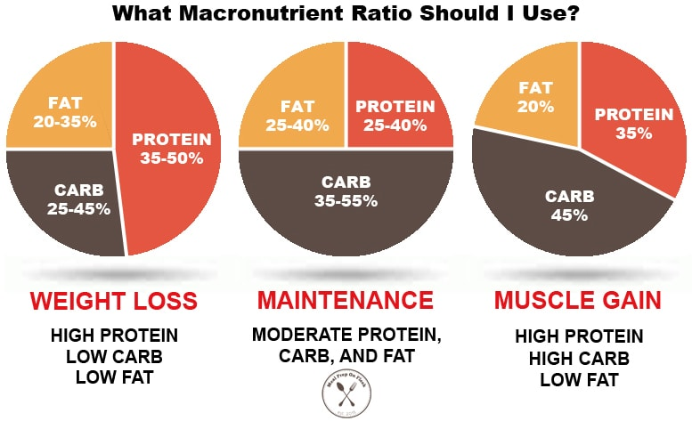

One of my favorite hobbies is working out. I go to the gym six days a week and follow a split that includes chest and shoulders, back and biceps, and two dedicated leg days. I also do cardio every day, and I include abs on certain days. Over time, this routine has not only improved my physical health, but also boosted my mental clarity and overall discipline.
Alongside training, eating healthy has become an essential part of my fitness lifestyle. I’ve experimented with several different diets, including intermittent fasting, but what’s worked best for me is eating consistently throughout the day with a focus on high-protein meals. I also track my macros to ensure I'm fueling my body properly for muscle growth and recovery.
Managing nutrition and training together has taught me a lot about balance and discipline. The image above shows a typical macro breakdown or meal prep that helps keep me on track with my goals. Staying consistent with both training and diet has been key to making real progress and feeling good both mentally and physically.
